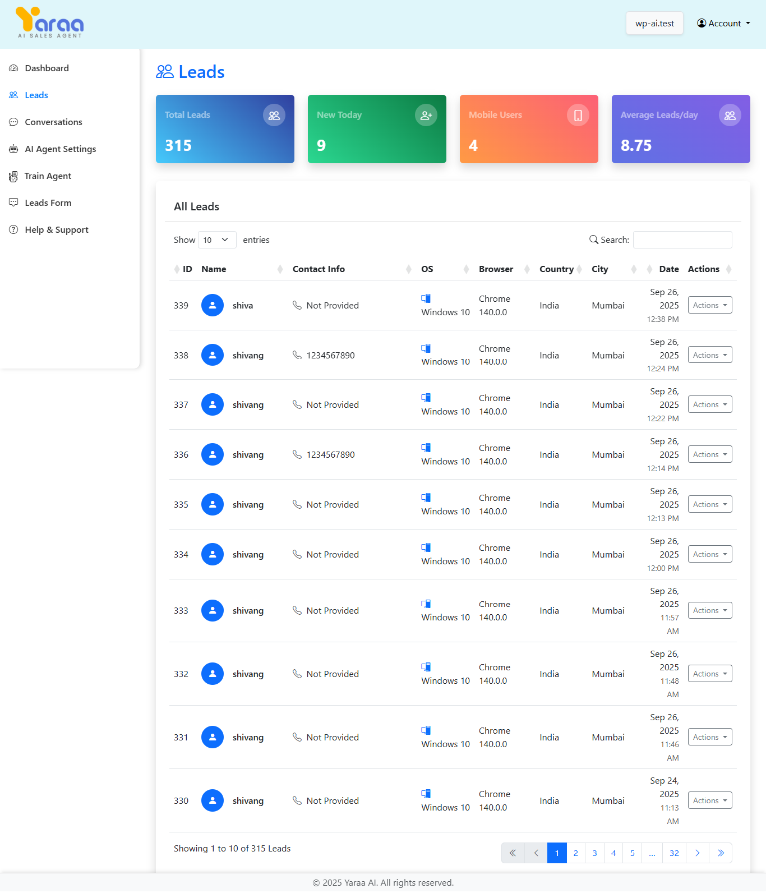

A) Introduction
Yaraa AI Sales Agent Dashboard is a powerful platform built to help businesses
manage and optimize their AI agent interactions. It allows you to track Leads activity
within the ai agent , monitor real-time conversations, and configure ai agent behavior and
settings — all from a single intuitive dashboard. An AI Sales Agent is a Smart Voice
Assistant That Sells for You — 24/7. It instantly assists customers by providing instant
responses, handling inquiries, and guiding potential buyers, all without human involvement.
It works like a sales representative, supporting customers anytime.
This user guide covers all options that the Yaraa AI Sales Agent Dashboard provides. Please
read the
documentation
carefully as it probably contains answers to most of the questions that may arise. If you
feel some aspect is not covered or have some questions, contact us via e-mail
yaraa.bizsuite@gmail.com. We will do our best to answer your questions in the shortest time.
B) Getting Started
To get started with Dashboard, you need to login. You will get your login
credentials once you are onboarded(you have added your card details and start your free
trial). This is the first step
in accessing the platform.
Login
After logging in, you will be directed to the main dashboard. If you haven't added your
domain yet, you will be redirected to the setup page to add it.
Setup Wizzard
C) Add Domain
1) To add your domain, click on the "+" icon.
2) After clicking on the "+" button, a popup will appear. Enter your domain name and click
on
the "Add Domain" button.
3) After adding your domain, you can setting up your ai agent .
D) AI Agent Setup
The AI Agent Setup section allows you to configure your agent's appearance and
functionality.
Domain Configuration
This section allows you to specify the domain where your AI agent will be deployed.
AI Agent Settings
Configure the appearance and behavior of your ai agent :
- Business Name: Enter your business name that will appear in the
ai agent .
- Business Logo: Upload your business logo to be displayed in the
ai agent .
- Enable Microphone Mode: Toggle to allow users to interact with the
ai agent using voice.
- Enable Brief Responses: Toggle to make the ai agent respond with brief
answers.
- Enable Avatar: Toggle to display an avatar in the ai agent interface.
- Audio Speed: Select the speaking speed of the avatar (Slow, Medium,
Fast).
Default Avatar
- Avatar Name: Set a name for your avatar.
- Avatar Designation: Set a title for your avatar.
- Default Idle/Speaking Video: Preview of the avatar's appearance when
idle or speaking.
Generate Avatar
- Avatar Name: Set a name for your avatar.
- Avatar Designation: Set a title for your avatar.
- Avatar Image: Upload an image to generate avatar videos (for Generate
Avatar option).
- Avatar Gender: Select gender preference for avatar generation.
- Generated Idle/Speaking Video: Preview of the avatar's appearance when
idle or speaking.
After configuring all settings, click the "Save Configuration" button to apply your changes.
E) Train Agent
The Train Agent section allows you to specify URLs from your website that the AI
agent should learn from.
Adding URLs for Crawling
This section allows you to add specific URLs from your website that contain information you
want your ai agent to learn:
- URL List: Add URLs from your website that contain important information
for the ai agent .
- Delete Option: Each URL has a delete button to remove it from the list.
- Add Another URL: Button to add more URLs to the list.
After adding all the URLs you want the ai agent to learn from, click the "Save Crawl URLs"
button to initiate the crawling process.
F) Integrate AI Agent on Your Website
Option 1: Add via Code Snippet
1) Copy the code snippet provided under the "Code Snippet" section.
2) Open your website’s HTML file and paste the code just before the closing
</body> tag.
3) Save the changes and refresh your website. The AI agent will now appear on your site.
Option 2: Install via WordPress Plugin
1) Click on the "Download Plugin" button in the "WordPress
Plugin" section.
2) Log in to your WordPress admin panel and go to Plugins > Add New > Upload
Plugin.
3) Choose the downloaded plugin file and click "Install Now".
4) After installation, activate the plugin. Your AI agent will now be integrated with your
WordPress website.
G) Dashboard
The Dashboard provides an overview of your website's Leads engagement and conversation
statistics.
Dashboard Overview
The Dashboard displays key metrics including:
- Total Leads (This Month): Shows the total number of Leads to your
website during the current month.
- Total Conversations (This Month): Displays the total number of
conversations initiated this month.
- Today's Conversations: Shows the number of conversations that occurred
today.
- Average Conversations/Day (This Month): Shows the average number of
conversations per day for the current month.
Conversations Breakdown
The Dashboard includes a pie chart showing the breakdown of conversations by type:
- Text-based Conversations: Conversations conducted through text chat.
- Voice-based Conversations: Conversations conducted through voice
interactions.
Monthly Conversations & New Leads Chart
This chart displays the trend of conversations and new Leads over time, allowing you to
track engagement patterns throughout the month.
Recent Leads
The Dashboard also shows a list of recent Leads with the following information:
- Leads: The name or identifier of the Leads.
- Email: The Lead's email address (if available).
- Phone: The Lead's phone number.
- Country: The country from which the Leads accessed your website.
- Status: The current status of the Lead's conversation
(Active/Inactive).
H) Leads
The Leads section provides detailed information about all Leads to your ai agent .

Leads Overview
The Leads page displays key metrics including:
- Total Leads: Shows the total number of leads to your website.
- New Today: Displays the number of new leads today.
- Mobile Users: Shows the number of leads accessing from mobile
devices.
- Average Leads/day: Shows the average number of Leads per day.
All Leads
The All Leads table provides detailed information about each Lead:
- ID: A unique identifier for each Lead.
- Name: The name of the Lead.
- Contact Info: Email address and phone number of the Lead.
- Device: The type of device used to access your website.
- Browser/OS: The browser and operating system used by the Lead.
- IP Address: The IP address of the Lead.
- Date: The date and time of the visit.
- Actions: Options to view details or see all conversations of each
Lead.
I) Leads Details
The Leads Details modal provides comprehensive information about a specific lead.
Personal Information
- Username: The Lead's username or identifier.
- Email: The Lead's email address.
- Phone: The Lead's phone number.
Technical Information
- IP Address: The Lead's IP address.
- Device: The device type and specifications used by the Lead.
- Browser: The browser used to access your website.
- Operating System: The operating system of the Lead's device.
J) Conversations
The Conversations section allows you to review all conversations between Leads and your
AI agent.
Conversations Overview
The Conversations page displays key metrics including:
- Total Conversations(This Month): Shows the total number of
conversations.
- Today's Conversation: Displays the number of conversations that
occurred today.
- Today's Leads: Shows the number of leads today.
- Average Conversations/day(This Month): Shows the average number of
conversations per day.
All Conversations
The All Conversations table provides detailed information about each conversation:
- User Information: The name and contact details of the user.
- Last Conversation ID: The ID of the most recent conversation with this
user.
- First Contact: The date and time of the first interaction with this
user.
- Status: The current status of the conversation (Active/Inactive).
- Actions: Redirects you to the list of conversations for the selected
Lead.
K) Conversation History
The Conversation History page shows a list of all conversations with a specific Lead.
User Information
The top section displays information about the lead:
- Name: The Lead's name or identifier.
- Email: The Lead's email address (if available).
- Phone: The Lead's phone number.
- First Seen: The date and time when the Lead was first detected.
- Device: The type of device used by the Lead.
- Browser: The browser used to access your website.
- IP Address: The Lead's IP address.
Conversation History
The Conversation History section shows:
- Conversation ID: The unique identifier for each conversation.
- Number of Messages: The total number of messages in the conversation.
- Status: The current status of the conversation (Active/Inactive).
- Start Date and Time: When the conversation began.
L) Conversation View
The Conversation View page displays the actual conversation between a Leads and the AI
agent .
Conversation
The main section shows the conversation between the Leads and the AI assistant:
- User Messages: Messages from the Leads appear on the left with the
Lead's name.
- AI Assistant Messages: Responses from the AI agent appear on the
right with "AI Assistant" label.
- Timestamps: Each message includes a timestamp showing when it was sent.
M) Leads Form
The Leads Form section allows you to customize the messages that your AI agent
sends to Leads during different stages of the conversation.
Types of Messages
You can customize the following types of messages:
- Welcome Message: The first message Leads see when they interact with
the ai agent .
- Name Request Message: Message asking Leads to provide their name.
- Welcome Back Message: Message shown to returning Leads after they've
provided their name.
- Email Request Message: Message asking Leads to provide their email
address.
- Phone Request Message: Message asking Leads to provide their phone
number.
Default Messages
The system provides default messages that you can customize:
- Welcome Message: "Hello! I'm Dr. Shah, your AI assistant from
NiftyHMS."
- Name Request Message: "Could you please share your name with me?"
- Welcome Back Message: "Hello {name}! How may I assist you today?"
- Email Request Message: "Pleasure to meet you, {name}! Could you share
your email address?"
- Phone Request Message: "Thank you! Lastly, may I have your Mobile
Number?"
Using Name Placeholders
You can use the {name} placeholder in your messages. This will be
automatically replaced with the Lead's name during the conversation.
Saving Your Configuration
After customizing your messages, click the "Save Configuration" button to apply your changes.
N) Help & Support
The Help & Support section provides answers to frequently asked questions (FAQs) about using
Yaraa AI Sales Agent.
Frequently Asked Questions
The FAQ section includes answers to common questions about using Yaraa AI Sales Agent:
- How can I view Leads details? Information about accessing Leads
information.
- How do I set up the ai agent for my website? Instructions for
configuring the ai agent .
- Can I customize the ai agent 's messages? Information about message
customization.
- How can I view past conversations? Instructions for accessing
conversation history.
- What do conversation statuses mean? Explanation of different
conversation status indicators.
- What Leads information is tracked? Details about the Leads data
collected.
- How does the website crawling feature work? Explanation of the crawling
functionality.
- What does "Default Avatar" mean? Information about avatar options.
Getting Additional Help
If you need further assistance, you can contact support at yaraa.bizsuite@gmail.com.
© Copyright 2021-2025 | Yaraa | All Rights Reserved